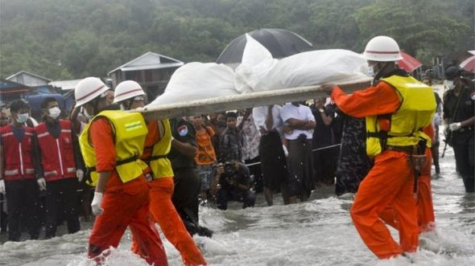

By Mizzima News
On Tuesday 4,July 2017
Communities in Myanmar's Dry Zone are benefitting from various activities ranging from climate resistant farming and livestock practices to soil and water conservation to help them better adapt to impact of climate change,according to statement from the UNDP.The activities are being implemented as part of a project "Addressing Climate Change Risks on Water Resources and Food Security in the Dry Zone of Myanmar".The project aims to benefit more than 250,000 people living in five townships- Shwebo and Monywa in Sagaing Region ,Myingyan and Nyaung Oo in Mandalay Region, and Chauk in Magway Region.
By Eleven
On Saturday 15,July 2017
Parliment has approved the government's plan to sign the Paris Agreement on climate change as a member on July 14.MPs also approved the proposal for Myanmar to become a member of the Doha Amendment which is the second pledge of the Protocol on Climate Change.After signing the Paris Aggrement,Myanmar will receive financial assistance to carry out the implementation of nationally determined contributions and proventive measures against climate changes.
By ABC Online
On Tuesday 25,July 2017,2:26am
Dramatic riverbank erosion in Myanmar has washed away a Buddhist pagoda,amid heavy flooding across large parts of the country that has displaced tens of thousands and caused two deaths. Video provided to Reuters by a Buddhist monk near Pakokku,520 kilometers north of the commercial hub of Yangon,showed a gold-lef-covered pagoda slipping into the raging waters of the Ayeyarwady late last week.The abbott at the pagoda,U Pyinnya Linkkara,said flooding was common in the area during the monsoon that runs from May to October,but this year's floods caused alarming erosion.Some riverside villages have been washed away entirely.
BBC News-Jul 19,2017
The Chinese-made aircraft went down in the andaman Sea on 7 June with no survivors.Investigators found the pilot had lost control after entering thick storm cloud.Ice had formed on the wings and sudden crosswinds had led the plane to stall,state media say.The disaster is among the worst in the country's aviation history.The aircraft,a Y-8 transporter made in China,was carrying 14 crew.Most of the passengers were military personnel and family members, including children.